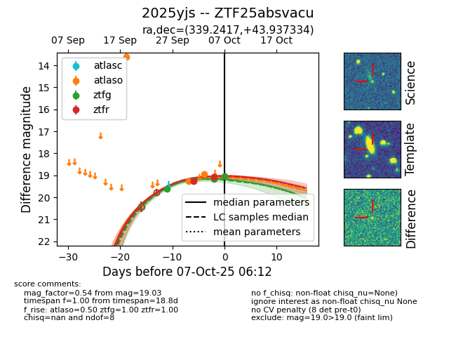
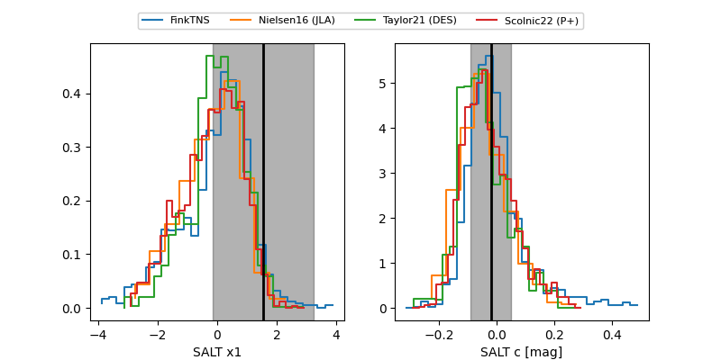

FINK: ZTF25absvacu
Lasair: ZTF25absvacu
ALeRCE: ZTF25absvacu
TNS: 2025yjs
YSE: 2025yjs
ZTF25absvacu (ztf,fink)
2025yjs (tns,yse)
equatorial (ra, dec) = (339.2417,+43.93733)
galactic (l, b) = (98.8249,-12.55040)


last atlaso=18.95, ztfg=19.03, ztfr=19.07
3 atlaso, 4 ztfg, 2 ztfr detections